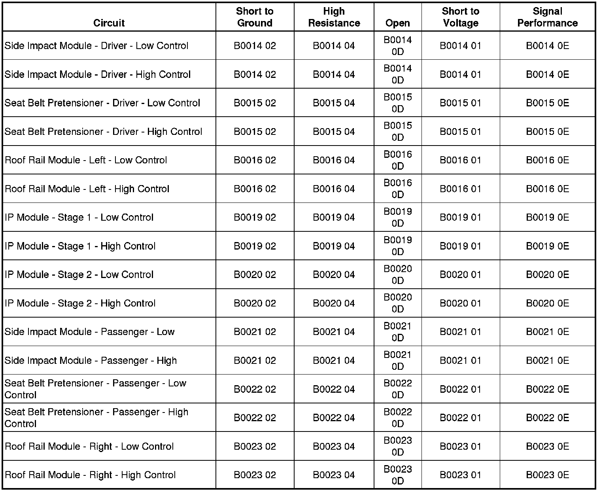

B0014
DTC B0014-B0045
Diagnostic Instructions
* Perform the Diagnostic System Check - Vehicle (Initial Inspection and Diagnostic Overview) prior to using this diagnostic procedure.
* Review Strategy Based Diagnosis (Initial Inspection and Diagnostic Overview) for an overview of the diagnostic approach.
* Diagnostic Procedure Instructions (Initial Inspection and Diagnostic Overview)provides an overview of each diagnostic category.
DTC Descriptors
B0014 01
- Driver Side Deployment Loop Short to Battery
B0014 02
- Driver Side Deployment Loop Short to Ground
B0014 04
- Driver Side Deployment Loop Open Circuit
B0014 0D
- Driver Side Deployment Loop Resistance Above Threshold
B0014 0E
- Driver Side Deployment Loop Resistance Below Threshold
B0015 01
- Driver Pretensioner Deployment Loop Short to Battery
B0015 02
- Driver Pretensioner Deployment Loop Short to Ground
B0015 04
- Driver Pretensioner Deployment Loop Open Circuit
B0015 0D
- Driver Pretensioner Deployment Loop Resistance Above Threshold
B0015 0E
- Driver Pretensioner Deployment Loop Resistance Below Threshold
B0016 01
- Left Roof Rail Initiator 1 Deployment Loop Short to Battery
B0016 02
- Left Roof Rail Initiator 1 Deployment Loop Short to Ground
B0016 04
- Left Roof Rail Initiator 1 Deployment Loop Open Circuit
B0016 0D
- Left Roof Rail Initiator 1 Deployment Loop Resistance Above Threshold
B0016 0E
- Left Roof Rail Initiator 1 Deployment Loop Resistance Below Threshold
B0019 01
- Passenger Frontal Deployment Loop Stage 1 Short to Battery
B0019 02
- Passenger Frontal Deployment Loop Stage 1 Short to Ground
B0019 04
- Passenger Frontal Deployment Loop Stage 1 Open Circuit
B0019 0D
- Passenger Frontal Deployment Loop Stage 1 Resistance Above Threshold
B0019 0E
- Passenger Frontal Deployment Loop Stage 1 Resistance Below Threshold
B0020 01
- Passenger Frontal Deployment Loop Stage 2 Short to Battery
B0020 02
- Passenger Frontal Deployment Loop Stage 2 Short to Ground
B0020 04
- Passenger Frontal Deployment Loop Stage 2 Open Circuit
B0020 0D
- Passenger Frontal Deployment Loop Stage 2 Resistance Above Threshold
B0020 0E
- Passenger Frontal Deployment Loop Stage 2 Resistance Below Threshold
B0021 01
- Passenger Side Deployment Loop Short to Battery
B0021 02
- Passenger Side Deployment Loop Short to Ground
B0021 04
- Passenger Side Deployment Loop Open Circuit
B0021 0D
- Passenger Side Deployment Loop Resistance Above Threshold
B0021 0E
- Passenger Side Deployment Loop Resistance Below Threshold
B0022 01
- Passenger Pretensioner Deployment Loop Short to Battery
B0022 02
- Passenger Pretensioner Deployment Loop Short to Ground
B0022 04
- Passenger Pretensioner Deployment Loop Open Circuit
B0022 0D
- Passenger Pretensioner Deployment Loop Resistance Above Threshold
B0022 0E
- Passenger Pretensioner Deployment Loop Resistance Below Threshold
B0023 01
- Right Roof Rail Initiator 1 Deployment Loop Short to Battery
B0023 02
- Right Roof Rail Initiator 1 Deployment Loop Short to Ground
B0023 04
- Right Roof Rail Initiator 1 Deployment Loop Open Circuit
B0023 0D
- Right Roof Rail Initiator 1 Deployment Loop Resistance Above Threshold
B0023 0E
- Right Roof Rail Initiator 1 Deployment Loop Resistance Below Threshold
Diagnostic Fault Information

Circuit/System Description
If a malfunction is detected, a DTC will be stored in non-volatile memory. During a side or frontal crash of sufficient force the inflatable restraint sensing and diagnostic module (SDM) will allow current to flow through the deployment loop in order to deploy the airbag module. The SDM performs continuous diagnostic tests on the deployment loops to check for proper circuit continuity, shorts to ground, and shorts voltage. There are 2 shorting bars used within the module connector which will short together both high and low circuits, when the connector is disconnected. This will help to prevent unwanted deployment of the inflator module during servicing.
Conditions for Running the DTC
Ignition voltage is between 9-16 volts.
Conditions for Setting the DTC
B0014 01, B0015 01, OR B0016 01, B0019 01 Stage 1, B0020 01 Stage 2, B0021 01, B0022 01, B0023 01
The airbag module high and/or low circuit is short to voltage for 120 milliseconds.
B0014 02, B0015 02, OR B0016 02, B0019 02 Stage 1, B0020 02 Stage 2, B0021 02, B0022 02, B0023 02
The airbag module high and/or low circuit is short to ground for 120 milliseconds.
B0014 04, B0015 04, OR B0016 04, B0019 04 Stage 1, B0020 04 Stage 2, B0021 04, B0022 04, B0023 04
The airbag module high and/or low circuit is open for 120 milliseconds.
B0014 0D, B0015 0D, OR B0016 0D, B0019 0D Stage 1, B0020 0D Stage 2, B0021 0D, B0022 0D, B0023 0D
The airbag module deployment loop resistance is more than 3.9 ohms for 120 milliseconds.
B0014 0E, B0015 0E, OR B0016 0E, B0019 0E Stage 1, B0020 0E Stage 2, B0021 0E, B0022 0E, B0023 0E
The airbag module deployment loop resistance is less than 1.1 ohms for 120 milliseconds.
Action Taken When the DTC Sets
* The SDM commands the AIR BAG indicator ON via serial data communications.
* The SDM will store a DTC, if event occurs system will still attempt deployments.
Conditions for Clearing the DTC
* The condition responsible for setting the DTC no longer exists.
* A history DTC will clear once 100 malfunction-free ignition cycles have occurred.
Reference Information
Schematic Reference
SIR Schematics ([1][2]Air Bag Systems)
Connector End View Reference
Component Connector End Views (Connector Views)
Description and Operation
SIR System Description and Operation (Description and Operation)
Electrical Information Reference
* Circuit Testing (Component Tests and General Diagnostics)
* Connector Repairs (Component Tests and General Diagnostics)
* Testing for Intermittent Conditions and Poor Connections (Component Tests and General Diagnostics)
* Wiring Repairs (Component Tests and General Diagnostics)
* SIR/SRS Wiring Repairs (Component Tests and General Diagnostics)
Scan Tool Reference
Control Module References (Programming and Relearning)for scan tool information.
Circuit/System Testing
Important: When removing connectors inspect for damage or corrosion. Damage or corrosion in the following requires repair or replacement of the affected component/connector.
* The pretensioner
* The air bag module
* The SDM module
* The air bag wiring harness connector
* The SDM wiring harness connector
1. Ignition OFF, disconnect the harness connector at the applicable air bag module. Refer to the applicable air bag module replacement procedure.
2. Ignition ON, test for less than 1 volt between the applicable high control circuit terminal and ground.
* I/P Module - Stage 1 terminal 10
* I/P Module - Stage 2 terminal 6
* Left Front Roof Rail Module terminal 13
* Right Front Roof Rail Module terminal 14
* Seat Belt Pretensioner - Left terminal 25
* Seat Belt Pretensioner - Right terminal 26
* Side Impact Module - Left terminal 17
* Side Impact Module - Right terminal 18
• If greater than the specified range, test the circuit for a short to voltage. If the circuit tests normal, replace the SDM.
3. Test for less than 1 volt between the applicable low control circuit terminal and ground.
* I/P Module - Stage 1 terminal 11
* I/P Module - Stage 2 terminal 7
* Left Front Roof Rail Module terminal 12
* Right Front Roof Rail Module terminal 15
* Seat Belt Pretensioner - Left terminal 24
* Seat Belt Pretensioner - Right terminal 27
* Side Impact Module - Left terminal 16
* Side Impact Module - Right terminal 19
• If greater than the specified range, test the circuit for a short to voltage. If the circuit tests normal, replace the SDM.
4. Ignition OFF, test for infinite resistance between the applicable high control circuit terminal and ground.
* I/P Module - Stage 1 terminal 10
* I/P Module - Stage 2 terminal 6
* Left Front Roof Rail Module terminal 13
* Right Front Roof Rail Module terminal 14
* Seat Belt Pretensioner - Left terminal 25
* Seat Belt Pretensioner - Right terminal 26
* Side Impact Module - Left terminal 17
* Side Impact Module - Right terminal 18
• If not the specified value, test the circuit for a short to ground. If the circuit tests normal, replace the SDM.
5. Test for infinite resistance between the applicable low control circuit terminal and ground.
* I/P Module - Stage 1 terminal 11
* I/P Module - Stage 2 terminal 7
* Left Front Roof Rail Module terminal 12
* Right Front Roof Rail Module terminal 15
* Seat Belt Pretensioner - Left terminal 24
* Seat Belt Pretensioner - Right terminal 27
* Side Impact Module - Left terminal 16
* Side Impact Module - Right terminal 19
• If not the specified value, test the circuit for a short to ground. If the circuit tests normal, replace the SDM.
6. With the applicable adaptor, connect in place of the air bag module.
7. Ignition ON, verify the DTC is set as current.
• If DTC is not set or is set as history, replace the applicable air bag module.
8. Ignition OFF, disconnect and the applicable adaptor.
9. Disconnect the harness connector at the SDM.
10. Test for less then 1 ohm of resistance between the following high control circuit terminals.
* I/P Module - Stage 1 terminal 10
* I/P Module - Stage 2 terminal 6
* Left Front Roof Rail Module terminal 13
* Right Front Roof Rail Module terminal 14
* Seat Belt Pretensioner - Left terminal 25
* Seat Belt Pretensioner - Right terminal 26
* Side Impact Module - Left terminal 17
* Side Impact Module - Right terminal 18
• If not within the specified range, test the circuit for an open/high resistance.
11. Test for less then 1 ohm of resistance between the following low control circuit terminals.
* I/P Module - Stage 1 terminal 11
* I/P Module - Stage 2 terminal 7
* Left Front Roof Rail Module terminal 12
* Right Front Roof Rail Module terminal 15
* Seat Belt Pretensioner - Left terminal 24
* Seat Belt Pretensioner - Right terminal 27
* Side Impact Module - Left terminal 16
* Side Impact Module - Right terminal 19
• If not within the specified range, test the circuit for an open/high resistance.
12. If all circuits test normal, replace the SDM.
Repair Instructions
Perform the Diagnostic Repair Verification (Verification Tests) after completing the diagnostic procedure.
* Inflatable Restraint Instrument Panel Module Replacement (Service and Repair)
* Inflatable Restraint Side Impact Module Replacement - Front (Service and Repair)
* Inflatable Restraint Side Impact Module Wiring Harness Replacement (Service and Repair)
* Roof Side Rail Inflatable Restraint Module Replacement - Left Side (Service and Repair)
* Roof Side Rail Inflatable Restraint Module Replacement - Right Side (Service and Repair)
* Seat Belt Buckle Pretensioner Replacement (Removal and Replacement)
* Control Module References (Programming and Relearning)for SDM replacement, setup, and programming